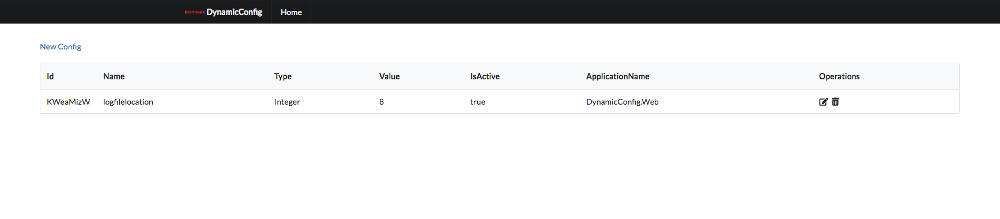

Welcome to Documentation
Dynamic Config
Dynamic Config creates a dynamic configuration structure. The Dynamic Config extension reads information from the config file extensions and automatically updates it (from the web interface).
Installion
Redis and bower are required for the operation of the application.
Redis installation: (macOS)
brew update
brew install redis
If Homebrew is not installed, you can install it as follows :
xcode-select --install
/usr/bin/ruby -e "$(curl -fsSL https://raw.githubusercontent.com/Homebrew/install/master/install)"
Redis installation: (Windows)
- Download redis
- Run redis-server.exe
Bower installation: (macOS,Linux,Windows)
npm install -g bower
If npm is not installed, you should install Node.js :
Download Node.js
Usage
Initialize with three parameters :
IConfig _configurationReader = new ConfigurationReader("SiteName","localhost",TimeSpan.FromMinutes(1));
- applicationName, for application name
- connectionString, for storage connection information
- refreshTimerIntervalInMs, for data synchronization on a regular basis
Dynamic Config After initializing, you can use the following to read the configuration file data: :
string value = _configurationReader.GetValue<string>(key);
